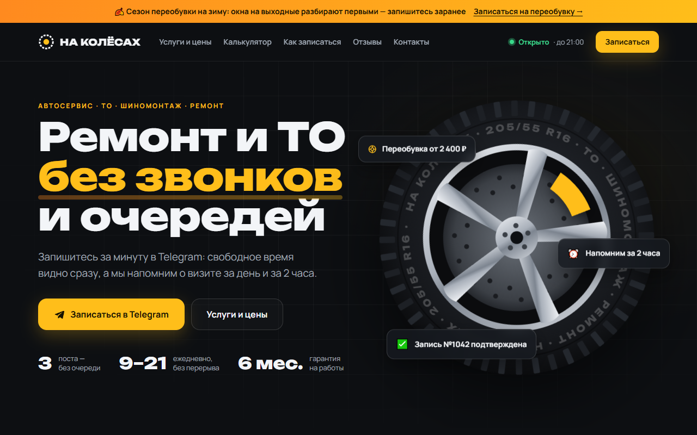
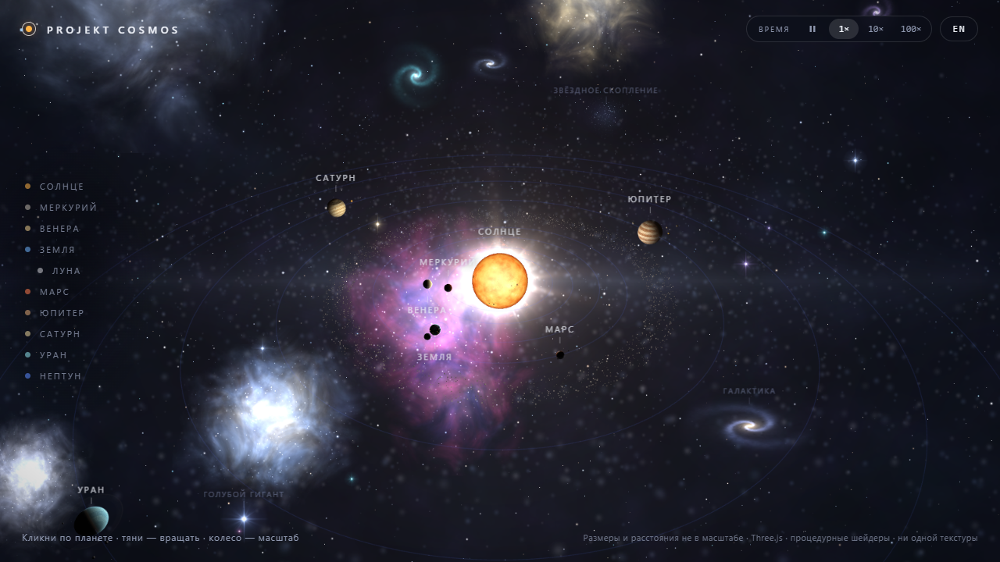

Онлайн-запись для автосервиса
Сайт, Telegram-бот и мини-приложение записи: свободное время по постам, напоминания за день и за 2 часа, карточки заявок для администратора, статистика и выгрузка в Excel. Демо-проект, сервис вымышленный.
Портфолио
Делаю интерактивные сайты и ботов для бизнеса: от лендинга с онлайн-записью до 3D-сцены прямо во вкладке браузера. Ниже — живые проекты, их можно открыть и потрогать.

Сайт, Telegram-бот и мини-приложение записи: свободное время по постам, напоминания за день и за 2 часа, карточки заявок для администратора, статистика и выгрузка в Excel. Демо-проект, сервис вымышленный.

Интерактивная 3D-модель Солнечной системы: планеты нарисованы шейдерами без единой картинки, пролёты камеры, орбиты по Кеплеру, живое Солнце со вспышками. Работает на ПК и телефоне.
Бот работает в демо-режиме: команда /admin показывает, как выглядит запись глазами администратора.